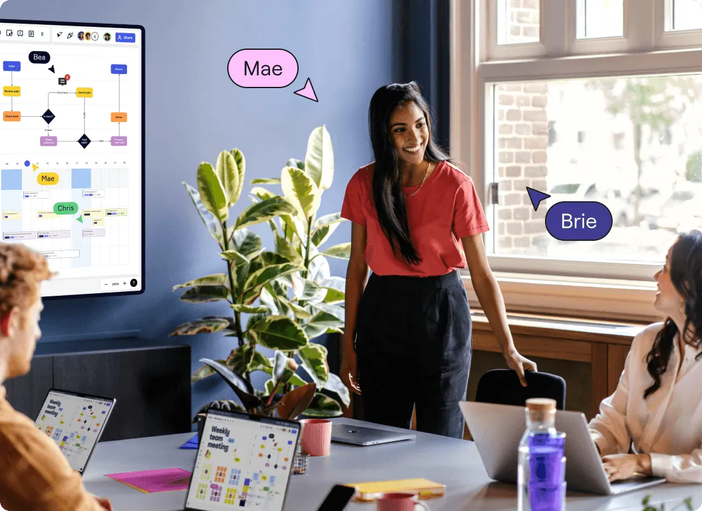

Просто рисовать на доске уже недостаточно
Решайте все задачи вместе при помощи Miro. Это пространство можно просто и бесплатно использовать в качестве интерактивной доски, однако его возможности гораздо шире. Miro — это бесконечный холст, усиленный инструментами для творческих мозговых штурмов и командной работы.


Проводите мозговые штурмы — с участием каждого, в любое время, из любой точки мира
Объединяйте всех участников проекта независимо от их местонахождения или часового пояса. Без проблем, за секунды переноситесь из реального в цифровое пространство, используя интерактивные дисплеи, приложение для распознавания заметок, а также приложения iOS и Android.